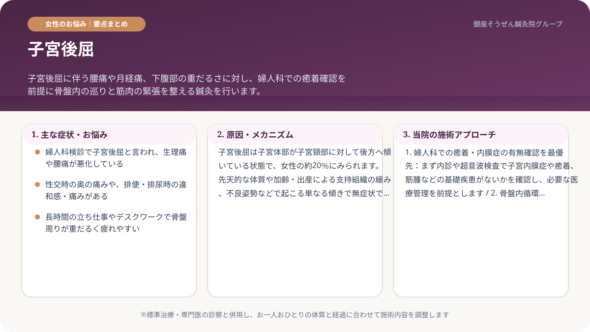

子宮後屈の鍼灸
子宮後屈に伴う腰痛や月経痛、下腹部の重だるさに対し、婦人科での癒着確認を前提に骨盤内の巡りと筋肉の緊張を整える鍼灸を行います。
まず知っておきたい要点と改善の流れ

子宮後屈は子宮体部が子宮頸部に対して後方へ傾いている状態で、女性の約20％にみられます。先天的な体質や加齢・出産による支持組織の緩み、不良姿勢などで起こる単なる傾きで無症状であれば病的意義はありません。一方、子宮内膜症や骨盤炎症性疾患、手術後の瘢痕によって直腸や骨盤腹膜と癒着固定している場合は、月経痛の悪化や深部性交時痛、排便痛、腰痛、不妊などの症状を引き起こすため注意が必要です。
このようなお悩みはありませんか？
- ✓婦人科検診で子宮後屈と言われ、生理痛や腰痛が悪化している
- ✓性交時の奥の痛みや、排便・排尿時の違和感・痛みがある
- ✓長時間の立ち仕事やデスクワークで骨盤周りが重だるく疲れやすい
- ✓便秘や下痢、頻尿、下腹部の張りなど骨盤内の不調が続いている
当院の施術アプローチ・改善の流れ
なぜ鍼灸で改善へ向かうのか？（作用機序の図解）
子宮後屈に対する鍼灸は、視床下部-下垂体-卵巣（HPO）軸と骨盤内血流の調整機序を通じて、お体本来の回復力を引き出します。

骨盤内臓器と同じ脊髄分節を共有する腰仙部や下肢経穴へ、体質に合わせた刺激を行います。
骨盤周囲の自律神経反射を介して子宮・卵巣周囲の血流を促し、冷えやうっ血を和らげます。
ホルモン変動で過敏になった視床下部を鎮静し、ほてり・発汗・気分の揺らぎを穏やかにします。
婦人科治療とも協調しながら、月経・妊娠・更年期それぞれの負担を軽くする土台を整えます。
院長YouTube解説・関連動画
子宮後屈は子宮体部の位置が子宮頚部に対して後ろに傾いている状態
子宮後屈は、子宮体部の位置が子宮頚部に対して後ろに傾いている状態のことです。子宮はしっかり固定されているわけではなく可動性が良い臓器です。そのため、傾いた状態になることもあるのです。
子宮頚部に対する体部の傾きの向きはいろいろあります。子宮頚部に対して体部が前に傾いている人が約70%、後ろに傾いている人が約20%いるといわれています。
子宮が後ろに傾いている状態であるだけの場合は特に病的な意味はありません。しかし、子宮内膜症や炎症の後に癒着が起こったことによって子宮が後ろに傾いた状態が固定されている場合は注意が必要です。
場合によって月経困難症や腰痛の症状が現れることもある
子宮後屈で起こる症状は、膣の縦軸に対して子宮体全体が後ろに傾くことと子宮体と子宮頸が鋭角を作って曲がることです。子宮後屈は子宮が異常な位置になることなのです。
子宮はしっかり固定されているわけではなく可動性が良い臓器のため、傾いた状態になることもあります。たまに移動して後屈している状態になる場合は特に問題はありません。
しかし、子宮が直腸や骨盤腹膜とくっついて背中側に引っ張られ後屈している状態になっている場合は、月経困難症や腰痛などの症状が起こることも多いです。
・月経痛の悪化
月経期間中に下腹部や骨盤周辺に強い痛みを感じることがあります。痛みは持続的で鈍い痛みから、鋭いけいれんのような痛みにまで及ぶことがあります。
・性交時痛
性交中、特に深い挿入時に骨盤や下腹部に痛みを感じることがあります。この痛みは鋭い痛みや圧迫感として現れることが多いです。
・排便時や排尿時の不快感
排便時に痛みや圧迫感を感じたり、排便が難しく感じることがあります。また、排尿時にも不快感を覚えることがあります。
・腰痛や骨盤痛
特に月経中や性交時、長時間の立ち仕事や座りっぱなしの状態で腰痛や骨盤痛を感じることがあります。
・不妊症
子宮後屈の一部の女性では、妊娠しにくい、または不妊の問題を抱えることがあります。
・月経不順や月経量の変化
月経周期が不規則になったり、経血量が通常よりも多くなったり少なくなったりすることがあります。
・腹部の膨満感や圧迫感
下腹部が腫れぼったい感じや膨満感を感じることがあります。
・慢性的な疲労感
子宮後屈の影響で痛みや不快感が続くと、慢性的な疲労感を感じることがあります。
・便秘や下痢
一部の女性は便秘や下痢の症状を経験することがあります。便秘がちになったり、逆に下痢をすることがあるかもしれません。
・尿失禁や頻尿
尿を漏らしやすくなったり、頻繁にトイレに行きたくなることがあります。
子宮後屈の改善方法は、手術です。ただし、手術によって改善を行うことは周りの臓器と子宮が癒着し子宮後屈が起こっている場合のみです。
癒着によって子宮後屈を起こしている場合は痛みが発生することが多いため、癒着を外し子宮を元の位置に戻すのです。
特に痛みなどの症状がない場合は病気ではなく、妊娠や出産をきっかけに正しい位置に戻ることもあります。先天的で症状がない場合は特に改善を行わなくても良いのです。
子宮後屈の手術の目的は、子宮後屈を修正し、正常な位置に戻すことで、痛みや不快感、不妊の改善を図ることと、深部性交痛、排便時や排尿時の不快感、腰痛などの症状を軽減することです。
子宮内膜症や骨盤内の癒着など、子宮後屈に関連する他の病気がある場合、その改善も兼ねて手術が行われることがあります。
〈手術の種類〉
・腹腔鏡を用いた低侵襲手術で、腹部に数か所の小さな切開を加え、カメラと手術器具を挿入して行う腹腔鏡下子宮前方固定術
傷が小さく、回復が早い、入院期間が短く、術後の痛みが少ないというメリットがあります。
・開腹手術で子宮を前方に固定する子宮前方固定術
腹腔鏡手術が難しい場合や、他の骨盤内疾患がある場合に行われる方法で、腹腔鏡では対応できない複雑なケースに適しているというメリットがあります。
・子宮後屈の原因が子宮内膜症や骨盤内の癒着を剥離する子宮内膜症や癒着の剥離手術
内膜症や癒着を直接改善することで、症状の根本的な改善を目指すことができるというメリットがあります。
・子宮を他の支持組織に吊り上げる子宮サスペンション手術
子宮の位置を安定させ、後屈を防ぐ効果があるというメリットがあります。
子宮後屈は健康に影響が出ることはあまりないといわれています。しかし、腰痛や生理痛につながることもあるため、状態を調べておくことで安心できる場合もあります。
調べるときは、膣内に指を入れ子宮の形状や向きや大きさなどをみたり超音波を使ったりします。
気になることがある場合は、不安にならないためにも病院に相談に行くと良いでしょう。
鎮痛剤: 痛みが軽度である場合、非ステロイド性抗炎症薬（NSAIDs）や鎮痛剤が処方されることがあります。これらは月経痛や慢性的な骨盤痛の緩和に役立ちます。
ホルモン療法: 子宮内膜症や月経痛の軽減を目的として、低用量ピル、プロゲスチン製剤、GnRHアゴニストなどが推奨されることがあります。ホルモンバランスを調整し、症状の改善を図ります。
骨盤底筋トレーニング: 子宮後屈が骨盤底筋の弱化に関連している場合、骨盤底筋の強化運動が勧められることがあります。これにより、子宮の支持力を強化し、症状の改善が期待できます。
婦人科・妊活・更年期・産後ケアのツボ図解
実際の施術ではお一人おひとりの体質・症状に合わせて選穴しますが、月経痛・子宮内膜症・更年期障害・不妊/IVF・産後ケアの全身調整の臨床でよく用いられる代表的なツボの目安です。

📌 代表的なツボの詳細一覧表を開く（6穴） ▼
| ツボ名 | 位置の目安 | 主な狙い | セルフケアの注意点 |
|---|---|---|---|
| 気海（きかい） | おへそから指2本分下 | 下腹部の巡り・月経前のだるさや冷えケア | 妊娠中・胚移植後は腹部への強い刺激を避けます。 |
| 関元（かんげん） | おへそから指4本分下 | 子宮・卵巣周囲の骨盤内血流サポート | 月経痛や冷えが強い時期の温灸が心地よいツボです。 |
| 血海（けっかい） | 膝のお皿の内上角から指3本分上 | 骨盤内のうっ血緩和・月経痛やPMSの軽減 | 太もも内側を優しくほぐすように押します。 |
| 三陰交（さんいんこう） | 内くるぶしの上から指4本分上 | 女性の三大経絡が交わる最重要穴（月経・更年期・睡眠） | 妊娠初期〜中期は強い刺激を避け専門家に相談してください。 |
| 太渓（たいけい） | 内くるぶしとアキレス腱の間 | ホルモンバランス・ほてりと冷えの調整・卵巣予備能サポート | 足首を温めながら穏やかに刺激します。 |
| 太衝（たいしょう） | 足の甲、親指と人差し指の骨の間 | PMSのイライラ・ストレス性の周期乱れ・不安感緩和 | 深呼吸しながら3〜5秒ずつ押して離します。 |
国際査読論文の科学的エビデンス
国際的な医学データベース（PubMed・Cochrane等）で報告されている月経痛・子宮内膜症・更年期障害・不妊/IVF・産後ケアの全身調整領域の代表的な査読済み鍼灸研究をまとめています（標準治療との併用や研究上の限界を含めて正確に掲載）。
📚 査読論文データ・PubMed出典リンクを開く（4件） ▼
| 年・研究デザイン | 対象・規模 | 主な結果 | 限界・出典 |
|---|---|---|---|
| 2016年 Cochraneレビュー | 原発性月経困難症 42 RCTs（n=4,640） | NSAIDs比較で疼痛緩和率（OR 4.99）・有害事象減少（OR 0.10）を示唆。シャム比較は一貫せず。 | エビデンス確実性は低〜非常に低。鎮痛薬の補完として位置づけ。 Cochrane (PMID: 27087494) |
| 2013年 Cochraneレビュー | 更年期ホットフラッシュ 16 RCTs（n=1,155） | 無治療比で頻度（SMD -0.50）・重症度（SMD -0.54）を中等度改善、シャム比でも重症度小幅改善。 | ホルモン補充療法（HT）より効果小。HT不適応時の補完選択肢。 Cochrane (PMID: 23897589) |
| 2018年 Cochraneレビュー | PMS・PMDD 5 RCTs（n=277） | シャム比較で気分・身体症状・QOL改善を示唆、有害事象の群間差なし。 | 小規模・試験数少（GRADE低〜非常に低）。 Cochrane (PMID: 30105749) |
| 2018年 大規模多施設RCT | 体外受精（IVF）848名（豪州・NZ 16施設） | 胚移植前後の短期3回鍼 vs シャムで生児出生率18.3% vs 17.8%（RR 1.02）と有意差なし。 | 出生率向上の直接根拠は未確立。ストレス・冷えの補完ケアとして説明。 JAMA (PMID: 29800212) |
参考文献・出典
- 2016年 Cochraneレビュー（原発性月経困難症 42 RCTs（n=4,640））— Cochrane (PMID: 27087494)
- 2013年 Cochraneレビュー（更年期ホットフラッシュ 16 RCTs（n=1,155））— Cochrane (PMID: 23897589)
- 2018年 Cochraneレビュー（PMS・PMDD 5 RCTs（n=277））— Cochrane (PMID: 30105749)
- 2018年 大規模多施設RCT（体外受精（IVF）848名（豪州・NZ 16施設））— JAMA (PMID: 29800212)
よくある質問（FAQ）
Q. 鍼灸で子宮後屈の傾き自体を前屈に治せますか？▼
Q. 無症状で子宮後屈と言われましたが施術は必要ですか？▼
あわせて読まれる関連疾患（女性のお悩み）
閉経前後のホルモン急減によるほてり・不眠・不安に対し、女性ホルモン関連のツボと七情に応じたお灸で心身を調える施術です。
子宮を支える骨盤底筋のゆるみで子宮が下がる状態です。婦人科治療や骨盤底筋体操と併用し、巡りと体調を整えます。
つらい下腹部痛や腰痛・頭痛を伴う生理痛に対し、骨盤内血流と自律神経を整える穏やかな鍼灸で寄り添います。
閉経後の膣の乾燥やかゆみ・性交痛に対し、産婦人科治療を最優先に、温めとツボ施術で骨盤内の巡りを支えます。
産婦人科での定期管理と併用し、関元・三陰交・次髎・腎兪で骨盤内の血流と瘀血・冷えを整えて痛みを和らげる鍼灸ケアです。
外陰部〜肛門周囲に強い痒みが生じる症状です。医療機関での原因特定を優先し、ツボ刺激と保湿養生で再発を防ぎます。
CLINICAL RECOVERY CASES
✨ 実際の臨床改善事例・回復経過を見る
銀座本院をはじめ各院での実際の改善事例を症状別に絞り込んでご確認いただけます。
おひとりで悩まず、まずはご相談ください
銀座本院・川口・大宮・横浜・博多・田無の各院でご予約を承っております。